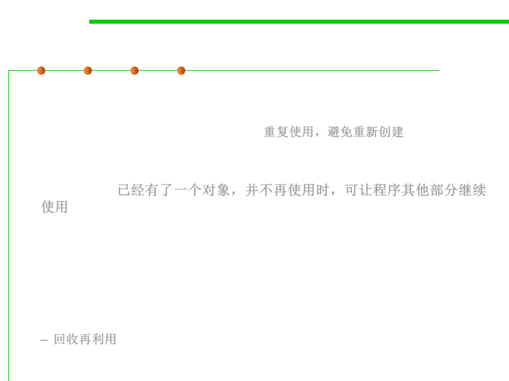

Object reuse
8.3 Code Tuning for Performance Optimization
▪ Objects are expensive to create.
– Where it is reasonable to reuse the same object, you should do so. You need
to be aware of when not to call new. 重复使用，避免重新创建
▪ One fairly obvious situation is when you have already used an object
and can discard it before you are about to create another object of the
same class. 已经有了一个对象，并不再使用时，可让程序其他部分继续
使用
– You should look at the object and consider whether it is possible to reset the
fields and then reuse the object, rather than throw it away and create another.
– This can be particularly important for objects that are constantly used and
discarded: for example, in graphics processing, objects such as Rectangles,
Points, Colors, and Fonts are used and discarded all the time.
– Recycling these types of objects can certainly improve performance.
– 回收再利用